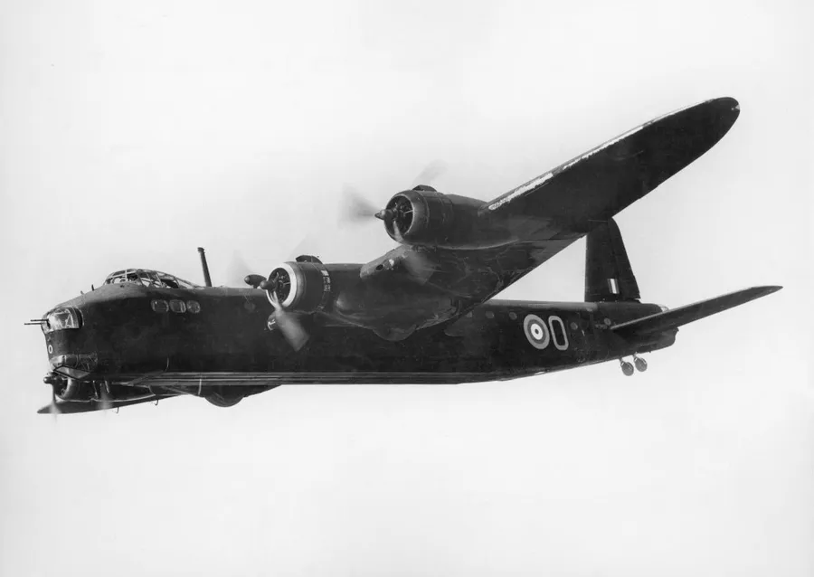
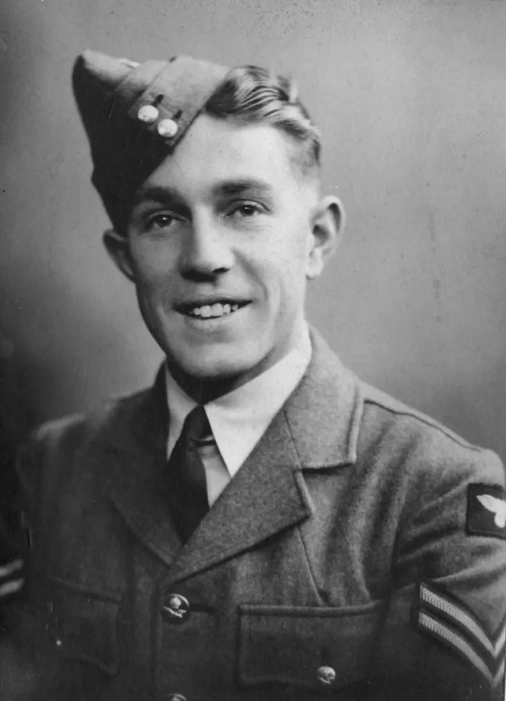
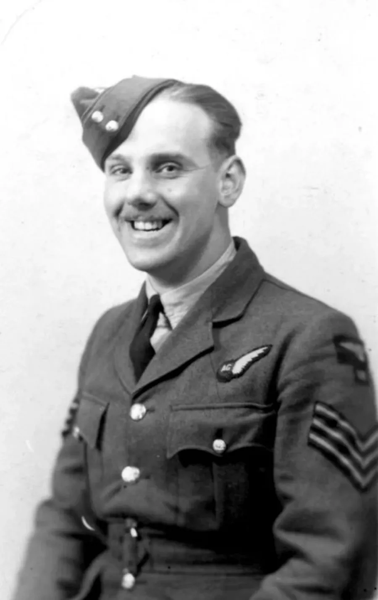
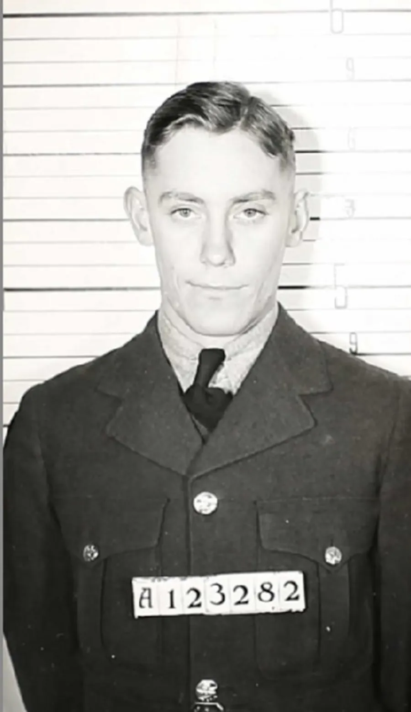
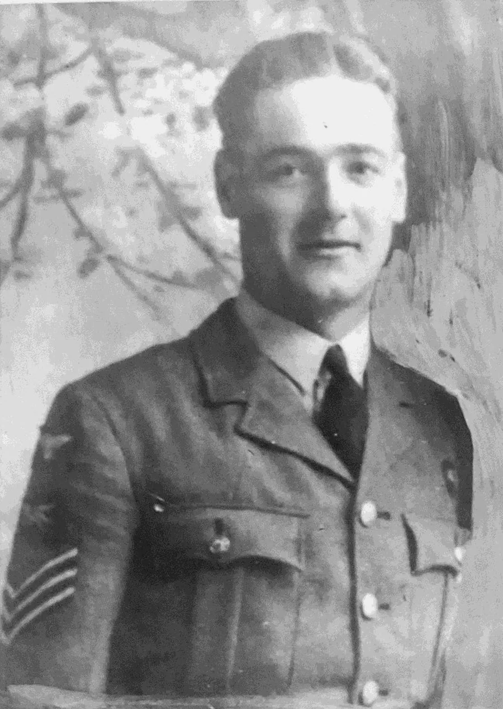
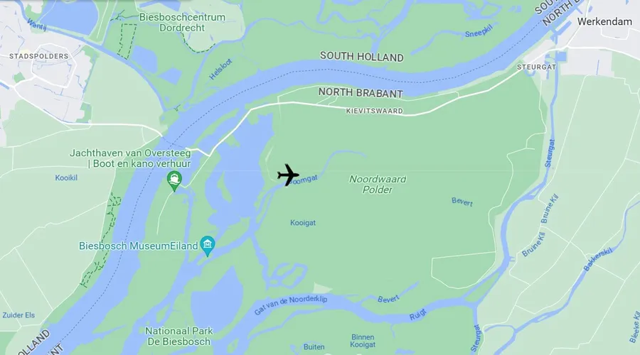
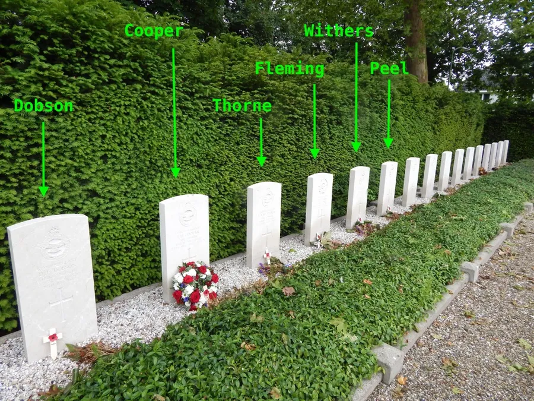

Short Stirling Mk I W7567 BU‑S — Lost 23–24 July 1942
by Adrian King

On 23rd July 1942 eight Short Stirling MK1's were ready to depart from Stradishall Air Base in Suffolk. They were part of a total of 215 aircraft destined for Duisburg Germany. A night raid with 80% moon. One of these eight Short Stirlings could not take off due to technical defects and so only seven left for Germany. Between 02.21 and 02.40 the bombs were dropped over Duisburg, but only by six aircraft.
On the way there the Stirlings were chased by a German Ju 88 night fighter and it managed to damage one of the planes over Oss in the Netherlands. The aircraft hit was Short Stirling W7567 BU-S of No. 214 (Federated Malay States) Squadron, Royal Air Force. It was flown by Pilot Officer Jack Dempsey Peel who managed to turn the aircraft around to try returning safely home. However this was not to be.

Around 02.21 hours the plane crashed in the vicinity of Salomon Glerum’s farm near the polder Kroon en Zalm, part of the Noordwaard polder 5 km southwest from Werkendam in Holland. This marked the 11th confirmed victory for the Ju 88 pilot Hauptmann Herbert Bönsch of Stab III/NJD 2.
Only the injured Wireless Operator Cyril Fairhall survived the crash and he received medical help from Doctor Schols in Werkendam. He was then captured by the Germans and it is said that he never recovered from his ordeal. The rest of the crew and also Pilot Officer Jack Dempsey Peel were all killed in the crash. Those who lost their lives were
- Sgt Denis Frank Dobson
- Sgt Eric Harold Cooper
- Sgt Frederick Arthur William Thorne
- Sgt John Brown Fleming
- Flight Sgt Peter John Withers
- Pilot Officer Jack Dempsey Peel
Sgt Denis Dobson’s body was located still in his seat. Sgt Eric Cooper’s body was found on the 5th August 1942 by Maarten van Elzelingen, who lived at the Loze Stoep. Three weeks later Maarten also found the next, an unknown body. The only thing found with the body was a cigarette case with the inscription F.A.W.T. The remains were buried as an unknown English airman on the 29th August 1942. Given the initials F.A.W.T they were relatively certain that the body was that of Sgt Frederick Thorne.


On the 25th February 1943 Sgt John Fleming’s body was found by Salomon Glerum and on March 25th 1943 the last crewmember was found during the cutting of the reeds. It is not clear exactly when Pilot Officer Jack Peel’s body was located.


They are all buried in the Werkendam Protestant Cemetery in the Netherlands.
Frederick Thorne is buried in Row 8. Grave 4. The epitaph on the gravestone placed by the Commonwealth War Graves Commission reads Always remembered with deepest affection. Mum, Dad, Brothers and Sisters. He is remembered on our War Memorial at St. James.
On 4th May each year which is Remembrance Day in the Netherlands the local community lay flowers at the graves of the crew.
Sergeant Frederick Arthur William Thorne lived most of his short life in our village with his parents and siblings at 1 Railway Cottages, Alderholt. He was known to his family as 'Arthur'. His father worked on the railway as a porter. He married Elsie Mary Crook in about May 1942 who had lived in Camel Green, Alderholt. His father was also Frederick Arthur Thorne died in 1966 and is buried at St. James. His mother Kathleen died in 1974.
Arthur's siblings were
- Mary (May)
- Kathleen (Kit)
- Janet (Lou)
- John (Jack)
- Stanley
The family still lives locally. His nephew Trevor Tague visited the cemetery with his wife Helen in the summer of 2007 and laid a posy of flowers at the grave — At the going down of the sun, we will remember them.


Source: Information from omzienengedenken.nl and the International Bomber Command Centre Losses Database.
| The Crew that Perished | |||||||
| Name | Component | Rank | Sevice No | Function | Birth Place | Age | Nationality |
|---|---|---|---|---|---|---|---|
| Denis Frank Dobson | RAF 214 Squ | Sgt | 539408 | Flight Engineer | Wandsworth | 24 | UK |
| Eric Harold Cooper | RAF Vol Res 214 Squ | Sgt | 123659 | Air Gunner | East Stoke | 21 | UK |
| Frederick Arthur William Thorne | RAF 214 Squ | Sgt | 550874 | Air Gunner | Alderholt | 22 | UK |
| John Brown Fleming | RCAF RAF 214 Squ | Sgt | R/123282 | Air Gunner | Toronto | 21 | Canada |
| Peter John Withers | RAF Vol Res 214 Squ | Flgt Sgt | 924720 | Observer | Bristol | 20 | UK |
| Jack Dempsey Peel | RAF Vol Res 214 Squ | P/O | 115123 | Pilot | Oklahoma | 22 | USA |